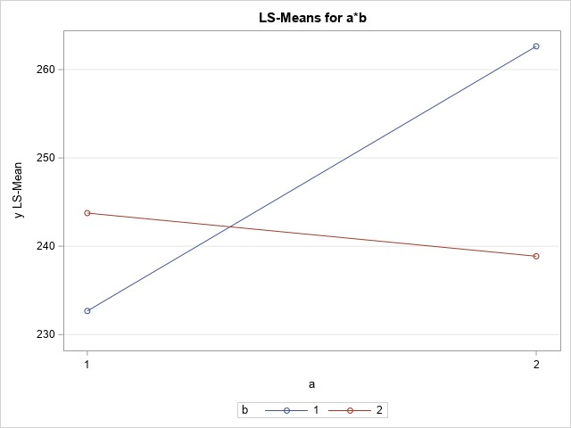

3 Factorial Treatment Designs
Often we are interested in more than one treatment factor. For example, we may want to look at
A factorial arrangement of treatments is a treatment design that is the most efficient approach for this type of experiment. For example, we’ve already seen
The goal is to describe as simply as possible how these factors affect our response variable.
Why use Factorials?
We could investigate a single factor as a time:
Alternatively, we could investigate every possible combination in a single experiment:
3.1 Introduction and Model
We’ll start by looking at the general set-up for a 2-factor design. Designate one factor as Factor A. Factor A has \(a\) levels. Designate the other factor as Factor B. Factor B has \(b\) levels. This means there are a total of \(a \times b\) treatment combinations. We will still be thinking about this factorial treatment design in the context of the CRD experimental design.
Example: In lab, you explored some data resulting from an experiment designed to study the effects of four treatments on the inches of fabric burned after a flame test. In the lab problem you were told
- Treatment A = Cotton fabric, fire-retardant additive X
- Treatment B = Polyester fabric, fire-retardant additive X
- Treatment C = Cotton fabric, fire-retardant additive Y
- Treatment D = Polyester fabric, fire-retardant additive Y
So really, rather than 1 factor (Treatment) with 4 levels, we have
Let’s plot the data. Does it look like there is a difference among the treatments? Can we (easily) see if there are differences among different levels of the two factors?
Your group was asked to come up with two contrasts. What contrasts did you use?
If we treat this experiment as the factorial treatment design that it is, we can look at the factors individually and in combination. We’ll need to start by adjusting the model and our notation.
The treatment combinations and their means can be summarized in a table
| Fabric | |||
|---|---|---|---|
| Additive | Cotton | Polyester | |
| X | |||
| Y |
These are fixed, unknown values. The observed treatment means and marginal means are:
| Fabric | ||||
|---|---|---|---|---|
| Additive | Cotton | Polyester | Additive Means | |
| X | ||||
| Y | ||||
| Fabric Means |
With a single factor, we could write the model in one of two ways:
With two factors, we can still write the model in one of two ways:
Before we can see how this new model gets translated into an ANOVA table, we need to explore the effect of a factor.
3.2 Effects
Definition: The effect of a factor
There are three types of effects in a factorial experiment:
To demonstrate these effects, we’ll go back to the pajamas example.
3.2.1 Simple Effects
Simple effects give the effect of one factor when the other(s) is held constant. So, a simple effect is the difference between two levels of a factor at a given level of the remaining factor(s).
In our pajama example there are 4 simple effects:
The simple effects comparing Cotton to Polyester:
given Additive X
given Additive Y
The simple effects comparing Additive X to Additive Y:
given Cotton fabric
given Polyester fabric
We can estimate the simple effects using our observed treatment means:
The estimated simple effects comparing Cotton to Polyester:
given Additive X
given Additive Y
The estimated simple effects comparing Additive X to Additive Y:
given Cotton fabric
given Polyester fabric
3.2.2 Main Effects
Main effects are averages of simple effects. Main effects average over a variety of conditions.
In our pajama example there are two main effects:
- Main effect for Fabric type:
- Main effect for Additive:
Main effects can also be thought of as differences between marginal means for a given factor. Let’s look more closely at Fabric type effect:
We could also re-write the main effect for Additive in a similar way.
3.2.3 Interaction Effects
Interaction Effects are differences of simple effects, and interaction effects ask the question:
We do this by looking at the difference in the simple effects for one factor at two different levels of the second factor.
For example,
- The simple effect of Fabric given Additive X
- The simple effect of Fabric given Additive Y
Is the effect of Fabric the same for both Additives?
What about the effect of Additive for both Fabrics?
Presence or absence of interaction effects can be illustrated graphically. We plot the response mean against one of the factors for both levels of the other factor. If the lines are approximately parallel, there is no interaction. If the lines are not parallel, there is interaction.
Important Note: The presence or absence of main effects tells us NOTHING about the presence or absence of interaction.The presence or absence of interaction tells us NOTHING about the presence or absence of main effects. The presence of interaction DOES tell us something about the homogeneity of simple effects. When factors interact, a single factor experiment will lead to disconnected and possibly misleading results.
Why do we care?
One thing we noted at the beginning of this section
The presence or absence of interaction helps inform how we can best report the findings of the experiment.
- Interaction is non-significant:
- Interaction is significant
It’s never wrong to report simple effects,
How do we determine significant? That brings us to . . .
3.3 Model and Analysis
We’ll start with the simplest type of factorial design with 2 factors. As we mentioned earlier, we’ll assume \(a\) levels of Factor A and \(b\) levels of Factor B arranged in a . That is, each replication of the experiment contains all \(a \times b\) treatment combinations. In general, there are \(n\) replicates. We call this a
Recall that \(y_{ijk}\) represents
In general (assuming equal sample sizes, which is not necessary), the data can be represented as
We’ve been assuming that \(\mu_{ij}\) represents the true mean for cell \((i,j)\). This implies the model
This is the cell means model. Like the the one-factor model, we can also write this using a treatment effects model:
Just as our model grows bigger, so does our ANOVA table:
We can formally test for interaction by testing the hypotheses
If there is no interaction, we look at main effects. For the main effects we can test hypotheses about the equality of Factor A treatment effects:
and the equality of Factor B effects:
and the main effects can be used to summarize the experiment.
If interaction is present, we must summarize the experiment using simple effects. Main effects would not adequately represent the effect of the factors.
Back to the pajamas data. We had two factors each with two levels, and 4 observations at each treatment combination. The linear model would be
Let’s sketch the ANOVA table:
From the interaction plot we saw earlier, it was unclear whether interaction is present or not. We can fit the ANOVA model using the code:
proc glimmix data=pajamas;
class fabric additive;
model burn=fabric additive fabric*additive;
run;And here is the output:
Fit Statistics
-2 Res Log Likelihood 67.28
AIC (smaller is better) 77.28
AICC (smaller is better) 87.28
BIC (smaller is better) 79.71
CAIC (smaller is better) 84.71
HQIC (smaller is better) 76.38
Pearson Chi-Square 120.50
Pearson Chi-Square / DF 10.04
Type III Tests of Fixed Effects
Num Den
Effect DF DF F Value Pr > F
fabric 1 12 4.88 0.0474
additive 1 12 75.31 <.0001
fabric*additive 1 12 4.21 0.0627What do you think?
We can output the estimated effects and get a plot using
lsmeans fabric*additive/diff plot=diffplot;which gives
fabric*additive Least Squares Means
Standard
fabric additive Estimate Error DF t Value Pr > |t|
C X 40.5000 1.5844 12 25.56 <.0001
C Y 30.0000 1.5844 12 18.93 <.0001
P X 47.2500 1.5844 12 29.82 <.0001
P Y 30.2500 1.5844 12 19.09 <.0001
Differences of fabric*additive Least Squares Means
Standard
fabric additive _fabric _additive Estimate Error DF t Value Pr > |t|
C X C Y 10.5000 2.2407 12 4.69 0.0005
C X P X -6.7500 2.2407 12 -3.01 0.0108
C X P Y 10.2500 2.2407 12 4.57 0.0006
C Y P X -17.2500 2.2407 12 -7.70 <.0001
C Y P Y -0.2500 2.2407 12 -0.11 0.9130
P X P Y 17.0000 2.2407 12 7.59 <.0001
What does this plot show us?
Although we generally worry about testing the interaction effect, there may be times where we want to estimate the interaction. That is, we may be interested in the magnitude of the difference between the simple effects. We can do this by adding an estimate statement to the PROC GLIMMIX program:
estimate 'fabric x additive' fabric*additive 1 -1 -1 1/alpha=0.1;This gives the output
Estimates
Standard
Label Estimate Error DF t Value Pr > |t| Alpha Lower Upper
fabric x additive -6.5000 3.1689 12 -2.05 0.0627 0.1 -12.1478 -0.8522
PROC GLIMMIX has both slice and slicediff options available that allow us to test one factor at each level of the other. The slice option is similar to a contrast statement, in that it only gives us the \(F\) stats and p-values. The slicediff option allows us to construct confidence intervals. Let’s see what they provide:
slice option:
lsmeans fabric*additive/slice=fabric slice=additive; Tests of Effect Slices for fabric*additive
Sliced By fabric
Num Den
fabric DF DF F Value Pr > F
C 1 12 21.96 0.0005
P 1 12 57.56 <.0001
Tests of Effect Slices for fabric*additive
Sliced By additive
Num Den
additive DF DF F Value Pr > F
X 1 12 9.07 0.0108
Y 1 12 0.01 0.9130slicediff option:
lsmeans fabric*additive/slicediff=fabric slicediff=additive cl; fabric*additive Least Squares Means
Standard
fabric additive Estimate Error DF t Value Pr > |t| Alpha Lower Upper
C X 40.5000 1.5844 12 25.56 <.0001 0.05 37.0478 43.9522
C Y 30.0000 1.5844 12 18.93 <.0001 0.05 26.5478 33.4522
P X 47.2500 1.5844 12 29.82 <.0001 0.05 43.7978 50.7022
P Y 30.2500 1.5844 12 19.09 <.0001 0.05 26.7978 33.7022
Simple Effect Comparisons of fabric*additive Least Squares Means By fabric
Simple
Effect Standard
Level additive _additive Estimate Error DF t Value Pr > |t| Alpha
fabric C X Y 10.5000 2.2407 12 4.69 0.0005 0.05
fabric P X Y 17.0000 2.2407 12 7.59 <.0001 0.05
Simple Effect Comparisons of fabric*additive Least Squares Means By fabric
Simple
Effect
Level additive _additive Lower Upper
fabric C X Y 5.6179 15.3821
fabric P X Y 12.1179 21.8821
Simple Effect Comparisons of fabric*additive Least Squares Means By additive
Simple
Effect Standard
Level fabric _fabric Estimate Error DF t Value Pr > |t| Alpha
additive X C P -6.7500 2.2407 12 -3.01 0.0108 0.05
additive Y C P -0.2500 2.2407 12 -0.11 0.9130 0.05
Simple Effect Comparisons of fabric*additive Least Squares Means By additive
Simple
Effect
Level fabric _fabric Lower Upper
additive X C P -11.6321 -1.8679
additive Y C P -5.1321 4.6321We may also construct confidence intervals for the marginal and cell means in a factorial experiment. To do this, we need the standard error of those means.
- Marginal mean of Factor A
- Marginal mean of Factor B
- Cell means
So, a confidence interval for
- Marginal mean
- Cell mean
We could also get a confidence interval for an interaction effect. Recall that an interaction effect for a 2 \(\times\) 2 factorial is a contrast with the coeefficients 1 -1 -1 1. The standard error for a contrast is
So for the pajamas example, the standard error would be
which would give a confidence interval
Using our pajamas example, we’ll use the following SAS program to see how to calculate estimates of the main effects, simple effects, and interaction effects to compare with what we did by hand.
proc glimmix data=pajamas;
class fabric additive;
model burn=fabric additive fabric*additive;
lsmeans fabric additive fabric*additive/diff cl;
estimate 'main effect cotton fabric' intercept 2 fabric 2 0 additive 1 1
fabric*additive 1 1 0 0/divisor=2 cl;
estimate 'main effect polyester fabric' intercept 2 fabric 0 2 additive 1 1
fabric*additive 0 0 1 1/divisor=2 cl;
estimate 'main effect additive X' intercept 2 additive 2 0 fabric 1 1
fabric*additive 1 0 1 0/divisor=2 cl;
estimate 'main effect additive Y' intercept 2 additive 0 2 fabric 1 1
fabric*additive 0 1 0 1/divisor=2 cl;
estimate 'effect of fabric with add X' fabric 1 -1 fabric*additive 1 0 -1 0/cl;
estimate 'effect of fabric with add Y' fabric 1 -1 fabric*additive 0 1 0 -1/cl;
estimate 'effect of additive in cotton' additive 1 -1 fabric*additive 1 -1 0 0/cl;
estimate 'effect of additive in polyester' additive 1 -1 fabric*additive 0 0 1 -1/cl;
estimate 'fabric x additive' fabric*additive 1 -1 -1 1/cl;
contrast 'fabric with add X' fabric 1 -1 fabric*additive 1 0 -1 0;
contrast 'fabric with add Y' fabric 1 -1 fabric*additive 0 1 0 -1;
contrast 'additive in cotton' additive 1 -1 fabric*additive 1 -1 0 0;
contrast 'additive in polyester' additive 1 -1 fabric*additive 0 0 1 -1;
contrast 'interaction' fabric*additive 1 -1 -1 1;
run; Estimates
Standard
Label Estimate Error DF t Value Pr > |t| Alpha
main effect cotton fabric 35.2500 1.1204 12 31.46 <.0001 0.05
main effect polyester fabric 38.7500 1.1204 12 34.59 <.0001 0.05
main effect additive X 43.8750 1.1204 12 39.16 <.0001 0.05
main effect additive Y 30.1250 1.1204 12 26.89 <.0001 0.05
effect of fabric with add X -6.7500 2.2407 12 -3.01 0.0108 0.05
effect of fabric with add Y -0.2500 2.2407 12 -0.11 0.9130 0.05
effect of additive in cotton 10.5000 2.2407 12 4.69 0.0005 0.05
effect of additive in polyester 17.0000 2.2407 12 7.59 <.0001 0.05
fabric x additive -6.5000 3.1689 12 -2.05 0.0627 0.05
Estimates
Label Lower Upper
main effect cotton fabric 32.8089 37.6911
main effect polyester fabric 36.3089 41.1911
main effect additive X 41.4339 46.3161
main effect additive Y 27.6839 32.5661
effect of fabric with add X -11.6321 -1.8679
effect of fabric with add Y -5.1321 4.6321
effect of additive in cotton 5.6179 15.3821
effect of additive in polyester 12.1179 21.8821
fabric x additive -13.4044 0.4044
Contrasts
Num Den
Label DF DF F Value Pr > F
fabric with add X 1 12 9.07 0.0108
fabric with add Y 1 12 0.01 0.9130
additive in cotton 1 12 21.96 0.0005
additive in polyester 1 12 57.56 <.0001
interaction 1 12 4.21 0.0627
fabric Least Squares Means
Standard
fabric Estimate Error DF t Value Pr > |t| Alpha Lower Upper
C 35.2500 1.1204 12 31.46 <.0001 0.05 32.8089 37.6911
P 38.7500 1.1204 12 34.59 <.0001 0.05 36.3089 41.1911
Differences of fabric Least Squares Means
Standard
fabric _fabric Estimate Error DF t Value Pr > |t| Alpha Lower Upper
C P -3.5000 1.5844 12 -2.21 0.0474 0.05 -6.9522 -0.04782
additive Least Squares Means
Standard
additive Estimate Error DF t Value Pr > |t| Alpha Lower Upper
X 43.8750 1.1204 12 39.16 <.0001 0.05 41.4339 46.3161
Y 30.1250 1.1204 12 26.89 <.0001 0.05 27.6839 32.5661
Differences of additive Least Squares Means
Standard
additive _additive Estimate Error DF t Value Pr > |t| Alpha Lower Upper
X Y 13.7500 1.5844 12 8.68 <.0001 0.05 10.2978 17.2022
fabric*additive Least Squares Means
Standard
fabric additive Estimate Error DF t Value Pr > |t| Alpha Lower Upper
C X 40.5000 1.5844 12 25.56 <.0001 0.05 37.0478 43.9522
C Y 30.0000 1.5844 12 18.93 <.0001 0.05 26.5478 33.4522
P X 47.2500 1.5844 12 29.82 <.0001 0.05 43.7978 50.7022
P Y 30.2500 1.5844 12 19.09 <.0001 0.05 26.7978 33.7022
Differences of fabric*additive Least Squares Means
Standard
fabric additive _fabric _additive Estimate Error DF t Value Pr > |t| Alpha
C X C Y 10.5000 2.2407 12 4.69 0.0005 0.05
C X P X -6.7500 2.2407 12 -3.01 0.0108 0.05
C X P Y 10.2500 2.2407 12 4.57 0.0006 0.05
C Y P X -17.2500 2.2407 12 -7.70 <.0001 0.05
C Y P Y -0.2500 2.2407 12 -0.11 0.9130 0.05
P X P Y 17.0000 2.2407 12 7.59 <.0001 0.05
Differences of fabric*additive Least Squares Means
fabric additive _fabric _additive Lower Upper
C X C Y 5.6179 15.3821
C X P X -11.6321 -1.8679
C X P Y 5.3679 15.1321
C Y P X -22.1321 -12.3679
C Y P Y -5.1321 4.6321
P X P Y 12.1179 21.8821
Let’s look more closely at the SAS code to see where those coefficients are coming from. Specifically, we’ll look at estimate statements 1 and 2 in detail.
The value provided by the estimate statement is constructed based on the estimates of the effects in the model: the estimates of
We’ve used cell means (treatment combination means) to see where main, simple, and interaction effects come from, but they can also be expressed as a function of the model effects.
For the pajama example, the lsmeans in SAS are
and the treatment effects model is
estimatestatement #1: main effect for Cotton fabric
estimatestatement #2: (simple) effect of fabric with Additive X
Why does learning this matter, if we’re duplicating results from lsmeans statements?
- For practice, try
estimatestatement #3: main effect for Additive X
- For practice, try
estimatestatement #4: (simple) effect of additive with Polyester fabric
3.4 More Than Two Levels per Treatment Factor
In the pajama example, we had two levels for each of our two factors. Fabric was either cotton or polyester, and Additive was either X or Y. Now we’ll consider a factorial with more than two levels for each factor.
Example: An experiment was conducted to aid in developing a product that can be used as a substrate for making ribbons. The experiment was designed to investigate the effects of base polymer and additive on the tensile strength of the resulting ribbon. There are two factors of interest: (1) base polymer: mylar, nylon, and polyethylene and (2) additive: c1, c2, c3, c4, and c5. There are 3 \(\times\) 5 treatment combinations, and the researchers plan to test each treatment combination 6 times, for a total of 90 observations. The data are in the ribbon.sas file.
The model is
and the ANOVA table is
Let’s look at an interaction plot to see what’s going on. We can also get an interaction plot using the lsmeans statement!
proc glimmix data=ribbon;
class polymer add;
model strength=polymer add polymer*add;
lsmeans polymer*add/plots=meanplot(sliceby=polymer join);
run;Which gives

So it looks like we have interaction!
We’ll also formally test for interaction
Type III Tests of Fixed Effects
Num Den
Effect DF DF F Value Pr > F
polymer 2 75 24.25 <.0001
add 4 75 0.14 0.9648
polymer*add 8 75 2.38 0.0241This verifies what we see in the plot.
So, we must look at simple effects and not main effects. We’ll use the same slice and slicediff statements we used with the pajama example:
proc glimmix data=ribbon;
class polymer add;
model strength=polymer add polymer*add;
lsmeans polymer*add/slice=polymer slice=add slicediff=(polymer add);
run;This is going to produce a LOT of output. Let’s look at the output for slice=add and slicediff=add.
Tests of Effect Slices for
polymer*add Sliced By add
Num Den
add DF DF F Value Pr > F
c1 2 75 3.41 0.0383
c2 2 75 3.53 0.0341
c3 2 75 4.90 0.0100
c4 2 75 14.31 <.0001
c5 2 75 7.63 0.0010
Simple Effect Comparisons of polymer*add Least Squares Means By add
Simple
Effect Standard
Level polymer _polymer Estimate Error DF t Value Pr > |t|
add c1 mylar nylon 6.6833 2.5593 75 2.61 0.0109
add c1 mylar poly 3.3500 2.5593 75 1.31 0.1945
add c1 nylon poly -3.3333 2.5593 75 -1.30 0.1968
add c2 mylar nylon 6.6167 2.5593 75 2.59 0.0117
add c2 mylar poly 1.9333 2.5593 75 0.76 0.4524
add c2 nylon poly -4.6833 2.5593 75 -1.83 0.0712
add c3 mylar nylon 7.6833 2.5593 75 3.00 0.0036
add c3 mylar poly 5.8167 2.5593 75 2.27 0.0259
add c3 nylon poly -1.8667 2.5593 75 -0.73 0.4681
add c4 mylar nylon 12.4667 2.5593 75 4.87 <.0001
add c4 mylar poly 11.1333 2.5593 75 4.35 <.0001
add c4 nylon poly -1.3333 2.5593 75 -0.52 0.6039
add c5 mylar nylon 3.1167 2.5593 75 1.22 0.2271
add c5 mylar poly 9.7833 2.5593 75 3.82 0.0003
add c5 nylon poly 6.6667 2.5593 75 2.60 0.0111The p-values given are for the LSD mean comparisons. We’re doing a lot of comparisons!
We can try to adjust for multiplicity by using the Tukey adjustment:
lsmeans polymer*add/slicediff=(polymer add) cl adjust=tukey;
Simple Effect Comparisons of polymer*add Least Squares Means By add
Adjustment for Multiple Comparisons: Tukey
Simple
Effect Standard
Level polymer _polymer Estimate Error DF t Value Pr > |t| Adj P Alpha
add c1 mylar nylon 6.6833 2.5593 75 2.61 0.0109 0.0290 0.05
add c1 mylar poly 3.3500 2.5593 75 1.31 0.1945 0.3947 0.05
add c1 nylon poly -3.3333 2.5593 75 -1.30 0.1968 0.3983 0.05
add c2 mylar nylon 6.6167 2.5593 75 2.59 0.0117 0.0310 0.05
add c2 mylar poly 1.9333 2.5593 75 0.76 0.4524 0.7313 0.05
add c2 nylon poly -4.6833 2.5593 75 -1.83 0.0712 0.1669 0.05
add c3 mylar nylon 7.6833 2.5593 75 3.00 0.0036 0.0101 0.05
add c3 mylar poly 5.8167 2.5593 75 2.27 0.0259 0.0659 0.05
add c3 nylon poly -1.8667 2.5593 75 -0.73 0.4681 0.7469 0.05
add c4 mylar nylon 12.4667 2.5593 75 4.87 <.0001 <.0001 0.05
add c4 mylar poly 11.1333 2.5593 75 4.35 <.0001 0.0001 0.05
add c4 nylon poly -1.3333 2.5593 75 -0.52 0.6039 0.8614 0.05
add c5 mylar nylon 3.1167 2.5593 75 1.22 0.2271 0.4465 0.05
add c5 mylar poly 9.7833 2.5593 75 3.82 0.0003 0.0008 0.05
add c5 nylon poly 6.6667 2.5593 75 2.60 0.0111 0.0295 0.05
Simple Effect Comparisons of polymer*add Least Squares Means By add
Adjustment for Multiple Comparisons: Tukey
Simple
Effect Adj Adj
Level polymer _polymer Lower Upper Lower Upper
add c1 mylar nylon 1.5849 11.7817 0.5637 12.8029
add c1 mylar poly -1.7484 8.4484 -2.7696 9.4696
add c1 nylon poly -8.4317 1.7651 -9.4529 2.7863
add c2 mylar nylon 1.5183 11.7151 0.4971 12.7363
add c2 mylar poly -3.1651 7.0317 -4.1863 8.0529
add c2 nylon poly -9.7817 0.4151 -10.8029 1.4363
add c3 mylar nylon 2.5849 12.7817 1.5637 13.8029
add c3 mylar poly 0.7183 10.9151 -0.3029 11.9363
add c3 nylon poly -6.9651 3.2317 -7.9863 4.2529
add c4 mylar nylon 7.3683 17.5651 6.3471 18.5863
add c4 mylar poly 6.0349 16.2317 5.0137 17.2529
add c4 nylon poly -6.4317 3.7651 -7.4529 4.7863
add c5 mylar nylon -1.9817 8.2151 -3.0029 9.2363
add c5 mylar poly 4.6849 14.8817 3.6637 15.9029
add c5 nylon poly 1.5683 11.7651 0.5471 12.7863Even with the Tukey adjustment, we need to remember the total number of comparisons we’re doing far exceeds the df for treatment. This means
A better way to try to keep the experiment-wise error rate reasonable is to look at only a small set of comparisons that are planned before carrying out the experiment. contrast and estimate statements (or lsmestimate) can be used to look at these pre-planned comparisons.
Planned Comparisons
In our example, we were not specific about the goals of the experiment, beyond considering these two factors. Typically, a researcher has more information about the specific questions of interest. Suppose nylon and polyethylene have been used by the company in the past, and they are interest in how mylar compares as a potentially new option. This leads to some specific hypotheses the company may want to test.
So, in general, the company may be interested in
But there are several ways to look at this comparison
Not all of these will be appropriate comparisons! It depends on whether or not interaction is present. If there is interaction, we have to use simple effects or a compromise. If there is no interaction, then we can use the main effects.
When we would use the compromise? When there are subsets of additives where the polymer does not interact with additive.
We’ll now see how to we can use estimate, contrast, and lsmestimate statements to determine which of the comparisons above are important. The estimate statement is constructed based on the estimates of the effects in the model. The lsmestimate statement is constructed based on the treatment lsmeans (the cell means).
Here’s a three step procedure to construct the contrast and estimate statements:
Write the linear combination you want to test or estimate in terms of the cell means, \(\mu_{ij}\)
Convert means into model parameters
Gather like terms
This will give you the coefficients to use in the statements. We’re going to start with lsmestimate, because this is where it really gets to shine.
Before determining the linear combinations, we need to know what order SAS has the lsmeans–this will tell us the order in which they go in the statements. The order is determined by the order the factors appear in the class statment (not the model statement) and then in alphanumeric order within each factor.
For example:
class polymer add;
model strength=polymer|add;
model strength=add|polymer;will put the factors and levels in the same order.
We have three polymers with 5 additives, so the order of the coefficients would be
However, if we use
class add polymer;
model strength=polymer|add;
model strength=add|polymer;we’d get a different order. Now, the order of the coefficients would be
Let’s stick with class polymer add order. We want to find the coefficients that we need to compare mylar vs the average of nylon and polyethylene in additive 1.
We want to test
which maps to coefficients
| Mc1 | Mc2 | Mc3 | Mc4 | Mc5 | Nc1 | Nc2 | Nc3 | Nc4 | Nc5 | Pc1 | Pc2 | Pc3 | Pc4 | Pc5 |
We can now add the lsmestimate statement to our program
lsmestimate polymer*add 'Mylar vs Nylon,Poly in Add c1' 1 0 0 0 0 -0.5 0 0 0 0 -0.5 0 0 0 0;
lsmestimate polymer*add 'Mylar vs Nylon,Poly in Add c1' 2 0 0 0 0 -1 0 0 0 0 -1 0 0 0 0/divisor=2;We could additional statements to look at this same comparison with the other additives. Note that I’m not looking at this comparison in Additive c5, because we already saw there is a difference between nylon and polyethylene in c5 so it doesn’t make sense to look at this.
proc glimmix data=ribbon;
class polymer add;
model strength=polymer|add;
lsmestimate polymer*add
'Mylar vs Nylon,Poly in Add c1' 2 0 0 0 0 -1 0 0 0 0 -1 0 0 0 0,
'Mylar vs Nylon,Poly in Add c2' 0 2 0 0 0 0 -1 0 0 0 0 -1 0 0 0,
'Mylar vs Nylon,Poly in Add c3' 0 0 2 0 0 0 0 -1 0 0 0 0 -1 0 0,
'Mylar vs Nylon,Poly in Add c4' 0 0 0 2 0 0 0 0 -1 0 0 0 0 -1 0/divisor=2;
run; Least Squares Means Estimates
Standard
Effect Label Estimate Error DF t Value Pr > |t|
polymer*add Mylar vs Nylon,Poly in Add c1 5.0167 2.2164 75 2.26 0.0265
polymer*add Mylar vs Nylon,Poly in Add c2 4.2750 2.2164 75 1.93 0.0575
polymer*add Mylar vs Nylon,Poly in Add c3 6.7500 2.2164 75 3.05 0.0032
polymer*add Mylar vs Nylon,Poly in Add c4 11.8000 2.2164 75 5.32 <.0001We see the estimates differ for the different additives, indicating a potential interaction between Mylar vs (Nylon & Poly) and Additive. We can investigate this further by comparing the simple effects. But for this, we need to use estimate.
Again the difference between lsmestimate and estimate is
Using estimate, we’ll need to go through the 3 step method outlined above.
- State the comparison in terms of the cell means
Convert cell means into treatment effects
Gather like terms
So, our estimate statement will only involve the polymer and polymer*additive estimates.
proc glimmix data=ribbon;
class polymer add;
model strength=polymer|add;
estimate 'Mylar vs Nylon,Poly in Add c1'
polymer 2 -1 -1 polymer*add 2 0 0 0 0 -1 0 0 0 0 -1 0 0 0 0/divisor=2;
run;which gives
Estimates
Standard
Label Estimate Error DF t Value Pr > |t|
Mylar vs Nylon,Poly in Add c1 5.0167 2.2164 75 2.26 0.0265
We could also look at all four comparisons at once like we did with lsmestimate and we could also add the adjust= option to control multiplicity.
proc glimmix data=ribbon;
class polymer add;
model strength=polymer|add;
estimate 'Mylar vs Nylon,Poly in Add c1'
polymer 2 -1 -1 polymer*add 2 0 0 0 0 -1 0 0 0 0 -1 0 0 0 0,
'Mylar vs Nylon,Poly in Add c2'
polymer 2 -1 -1 polymer*add 0 2 0 0 0 0 -1 0 0 0 0 -1 0 0 0,
'Mylar vs Nylon,Poly in Add c3'
polymer 2 -1 -1 polymer*add 0 0 2 0 0 0 0 -1 0 0 0 0 -1 0 0,
'Mylar vs Nylon,Poly in Add c4'
polymer 2 -1 -1 polymer*add 0 0 0 2 0 0 0 0 -1 0 0 0 0 -1 0/divisor=2;
run;These give us the same results we saw with lsmestimate! So why bother going through all of this mess if we could get them more easily with lsmestimate? So now that we know how to build the estimate statements we can do so to explore contrasts to see if there is significant interaction. We can see there is from the Type III tests, but interaction now has 8 df–there’s a lot more going on with interaction than there was in a 2 \(\times\) 2 model, and we need to tease it apart. Right now, we’re specifically interested in whether there is interaction between the mylar vs nylon/poly comparison and additive.
Let’s write out the null hypothesis for this interaction.
Rather than a single equation for interaction like we saw in the 2 \(\times\) 2, we actually have a set of 4 equations. This is a
How can we come up with the 4 equations to see what goes in the contrast statement?
We’ll do the same thing we did in the three step process–write the means in terms of their treatment effects and gather like terms. Let’s look at c1 vs c5:
So the main effects cancel out and the only term we need in our contrast statement is polymer*add. That would give us coefficients:
| Mc1 | Mc2 | Mc3 | Mc4 | Mc5 | Nc1 | Nc2 | Nc3 | Nc4 | Nc5 | Pc1 | Pc2 | Pc3 | Pc4 | Pc5 |
and our contrast statement would look like this:
proc glimmix data=ribbon;
class polymer add;
model strength=polymer|add;
contrast 'Mylar vs Nylon,Poly by Add interaction'
polymer*add 1 0 0 0 -1 -0.5 0 0 0 0.5 -0.5 0 0 0 0.5,
polymer*add 0 1 0 0 -1 0 -0.5 0 0 0.5 0 -0.5 0 0 0.5,
polymer*add 0 0 1 0 -1 0 0 -0.5 0 0.5 0 0 -0.5 0 0.5,
polymer*add 0 0 0 1 -1 0 0 0 -0.5 0.5 0 0 0 -0.5 0.5;
run;which gives
Type III Tests of Fixed Effects
Num Den
Effect DF DF F Value Pr > F
polymer 2 75 24.25 <.0001
add 4 75 0.14 0.9648
polymer*add 8 75 2.38 0.0241
Contrasts
Num Den
Label DF DF F Value Pr > F
Mylar vs Nylon,Poly by Add interaction 4 75 1.76 0.1450
So it looks like there is potentially interaction between this comparison of polymers and additive. If we wanted to present results for this comparison, we should do it separately for the 5 additives. If the structure of the factors lends itself to specific comparisons, we could also tease apart that 4 df interaction test.
Suppose we do have additional knowledge about the factor structures, and Additives c1 and c2 are similarly formulated as are Additives c3 and c4. We already know that polymers N and P are different in c5, so so we can’t report M versus (N/P) for c5. We can further tease apart c1, c2, c3, and c4 and potentially report some more general effects. We’ll consider (c1 and c2) and (c3 and c4), and break apart that 4 df interaction test into 4 separate 1 df tests.
- H\(_0:\) No interaction between M vs (N/P) and Additives (c1 and c2)
- H\(_0:\) No interaction between M vs (N/P) and Additives (c3 and c4)
At this point, if we were reporting our results, we’d stop. We can report M vs (N/P) averaged over (c1 and c2), but must report M vs (N/P) separately for the other 3 additives. Where do the other 2 df live?
Let’s suppose (this is not true), that both contrast 1 and 2 had been non-significant. We could then move on to:
- Could we combine (c1 and c2) and (c3 and c4)?
The remaining df is:
- M vs (N/P) \(\times\) [(c1/c2/c3/c4) vs c5]
3.5 Multifactor Experiments
So far, we’ve discussed factorial experiments with two factors, A and B, both of which have 2 or more levels, \(a\) and \(b\). We’ve referred to this as an \(a \times b\) factorial treatment design. We’re still considering the completely randomized (CRD) experimental design. If we add a factor C (with \(c\) levels) to our \(a \times b\) design, we have an \(a \times b \times c\) factorial design. If all three factors have \(a\) levels, we can alternatively describe this as an \(a^3\) factorial. The total number of treatments is \(a \times b \times c\).
Example: The following experiment was actually carried out in an experimental design class at Arizona State University, and considered some of the many different ways to bake brownies. The purpose of the experiment was to determine how the pan material, brand of brownie mix, and the stirring method affect the scrumptiousness of brownies. The factors and levels were:
| Factor | Levels |
|---|---|
| A= Pan Material | Glass, Aluminum |
| B= Stirring Method | Spoon, Mixer |
| C= Brand of Mix | Expensive, Cheap |
This is a \(2 \times 2 \times 2 = 2^3\) experiment. There are 8 treatment combinations:
| Factors | |||
|---|---|---|---|
| Treatment | Pan | Stirring | Mix |
| 1 | Glass | Spoon | Expensive |
| 2 | Aluminum | Spoon | Expensive |
| 3 | Glass | Mixer | Expensive |
| 4 | Aluminum | Mixer | Expensive |
| 5 | Glass | Spoon | Cheap |
| 6 | Aluminum | Spoon | Cheap |
| 7 | Glass | Mixer | Cheap |
| 8 | Aluminum | Mixer | Cheap |
The response variable was scrumptiousness, a subjective measured derived from a questionnaire given to the subjects who sampled each batch of brownies. The questionnaire included questions related to taste, appearance, consistency, aroma, etc. Eight batches of each treatment combination were rated, for a total of \(8 \times 8 = 64\) experimental units.
Before we look at the data, let’s consider how we must adapt our notation, model, and ANOVA table for an additional factor.
First, consider the cell mean \(\mu_{ijk}\)
Our response now have 4 subscripts: \(y_{ijkl}\)
The treatment effects model is:
And a sketch of the ANOVA table:
It gets a little more complicated to make a table of cell means
| Stirring | Method | Stirring | Method | |
|---|---|---|---|---|
| Spoon | Spoon | Mixer | Mixer | |
| Pan | Material | Pan | Material | |
| Mix Brand | Glass | Aluminum | Glass | Aluminum |
| Expensive | \(\mu_{111}\) | \(\mu_{211}\) | \(\mu_{121}\) | \(\mu_{221}\) |
| Cheap | \(\mu_{112}\) | \(\mu_{212}\) | \(\mu_{122}\) | \(\mu_{222}\) |
The data are in the file brownie.sas. Let’s put in the observed cell means
| Stirring | Method | Stirring | Method | |
|---|---|---|---|---|
| Spoon | Spoon | Mixer | Mixer | |
| Pan | Material | Pan | Material | |
| Mix Brand | Glass | Aluminum | Glass | Aluminum |
| Expensive | ||||
| Cheap | ||||
We can also think about main effect marginal means
and treatment combination marginal means
3.5.1 Simple Effects and Interaction in a Multifactor Experiment
We can again look at simple effects but this time, instead of looking at the effect of one factor with the other held constant, simple effects describe the effect of one factor with the other two (or more) held constant.
Example: We can consider the simple effect of pan material, given stirring with a spoon and expensive mix:
We can use simple effects to determine if there is conditional interaction. Conditional interaction means
This is denoted as \(A \times B | C_k\) or \(A \times B | C\). Determining whether \(A \times B | C_k\) is nonzero is the same as asking
We can also construct interaction plots to explore this. For the brownie example, suppose we are interested in the interaction between pan material and stirring method, given the cheap brand.
We can also examine the conditional interaction between pan material and stirring method, given the expensive mix.
These two plots together can be examined to see if there is a three-way interaction present. Three-way interaction occurs when
In this case, it does not appear there is significant three-way interaction. What would three-way interaction look like?
3.5.2 Analysis for Multifactor Experiments
We’ll now explore the analysis of a three-way factorial treatment design by looking first at the analysis of the brownie data, and then two additional example data sets with increasingly complex interactions among the three factors.
The basic steps in analyzing data arising from a three-factor design are:
Include all main effects, two-way, and three-way interaction terms in the model and test the three-way interaction.
If the three-way interaction term is not significant, test the two-way interactions. If the three-way interaction is significant, test the two-way interactions at each level of the third factor (conditional interactions).
Depending on the results of (1) and (2),
Test main effects (for those main effects free of any interaction)
Test simple effects of one factor conditional on the second but free of the third (when there are two-way interactions, but no three-way)
Test simple effects of one factor conditional on combinations of the other two (when there is three-way interaction)
This can be conducted using a two-stage approach in SAS.
Stage 1: Run the basic analysis including all main effects, two-way interactions, and three-way interaction to see what is significant.
proc glimmix;
class a b c;
model y=a|b|c; *or model y=a b c a*b a*c b*c a*b*c;
run;Stage 2: Add needed two-way interaction and/or main effect contrasts, lsmeans, slice, and slicediff statements to test various hypotheses and estimate various differences, depending on which thee-way or two-way interactions are significant (and therefore which hypotheses are legitimate to test).
3.5.2.1 Brownie Example
Stage 1: We’ll start using the basic program
proc glimmix data=brownies;
class pan stir mix;
model y=pan|stir|mix;
run;which gives
Type III Tests of Fixed Effects
Num Den
Effect DF DF F Value Pr > F
pan 1 56 11.95 0.0010
stir 1 56 2.99 0.0894
pan*stir 1 56 0.01 0.9194
mix 1 56 0.01 0.9194
pan*mix 1 56 0.26 0.6132
stir*mix 1 56 0.17 0.6858
pan*stir*mix 1 56 0.04 0.8396
Stage 2: Based on the output above, we only need to further investigate the (main) effects of pan material and (potentially) stirring method. We can refit the model without the interactions and add an lsmeans statements
proc glimmix data=brownies;
class pan stir mix;
model y=pan stir mix;
lsmeans pan stir/diff;
run;which gives
Type III Tests of Fixed Effects
Num Den
Effect DF DF F Value Pr > F
pan 1 60 12.70 0.0007
stir 1 60 3.17 0.0798
mix 1 60 0.01 0.9169
pan Least Squares Means
Standard
pan Estimate Error DF t Value Pr > |t|
aluminum 12.6250 0.4217 60 29.94 <.0001
glass 10.5000 0.4217 60 24.90 <.0001
Differences of pan Least Squares Means
Standard
pan _pan Estimate Error DF t Value Pr > |t|
aluminum glass 2.1250 0.5963 60 3.56 0.0007
stir Least Squares Means
Standard
stir Estimate Error DF t Value Pr > |t|
mixer 12.0938 0.4217 60 28.68 <.0001
spoon 11.0313 0.4217 60 26.16 <.0001
Differences of stir Least Squares Means
Standard
stir _stir Estimate Error DF t Value Pr > |t|
mixer spoon 1.0625 0.5963 60 1.78 0.07983.5.2.2 Data Set #2 Example
The data are in the file multifactor examples.sas.
Let’s first explore the cell means and sketch the interaction plots.
a*b*c Least Squares Means
Standard
a b c Estimate Error DF t Value Pr > |t|
1 1 1 221.83 4.8769 16 45.49 <.0001
1 1 2 243.50 4.8769 16 49.93 <.0001
1 2 1 239.77 4.8769 16 49.16 <.0001
1 2 2 247.73 4.8769 16 50.80 <.0001
2 1 1 254.87 4.8769 16 52.26 <.0001
2 1 2 270.40 4.8769 16 55.44 <.0001
2 2 1 232.07 4.8769 16 47.58 <.0001
2 2 2 245.67 4.8769 16 50.37 <.0001Let’s plot B \(\times\) C for each level of A.
Stage 1: We’ll start with the basic program
proc glimmix data=example2;
class a b c;
model y=a|b|c;
run;
Fit Statistics
Pearson Chi-Square / DF 71.35
Type III Tests of Fixed Effects
Num Den
Effect DF DF F Value Pr > F
a 1 16 13.23 0.0022
b 1 16 3.38 0.0846
a*b 1 16 25.53 0.0001
c 1 16 18.15 0.0006
a*c 1 16 0.00 0.9715
b*c 1 16 1.28 0.2738
a*b*c 1 16 0.73 0.4062Based on this, we can look at the main effects of C and the simple effects of A given B (averaged over C) and B given A (averaged over C).
Stage 2:
proc glimmix data=example2;
class a b c;
model y=a b a*b c;
lsmeans c/diff;
lsmeans a*b/slicediff=a slicediff=b;
run; Fit Statistics
Pearson Chi-Square / DF 67.65
Type III Tests of Fixed Effects
Num Den
Effect DF DF F Value Pr > F
a 1 19 13.95 0.0014
b 1 19 3.57 0.0743
a*b 1 19 26.93 <.0001
c 1 19 19.14 0.0003
c Least Squares Means
Standard
c Estimate Error DF t Value Pr > |t|
1 237.13 2.3743 19 99.87 <.0001
2 251.83 2.3743 19 106.06 <.0001
Differences of c Least Squares Means
Standard
c _c Estimate Error DF t Value Pr > |t|
1 2 -14.6917 3.3578 19 -4.38 0.0003
a*b Least Squares Means
Standard
a b Estimate Error DF t Value Pr > |t|
1 1 232.67 3.3578 19 69.29 <.0001
1 2 243.75 3.3578 19 72.59 <.0001
2 1 262.63 3.3578 19 78.22 <.0001
2 2 238.87 3.3578 19 71.14 <.0001
Simple Effect Comparisons of a*b Least Squares Means By a
Simple
Effect Standard
Level b _b Estimate Error DF t Value Pr > |t|
a 1 1 2 -11.0833 4.7486 19 -2.33 0.0307
a 2 1 2 23.7667 4.7486 19 5.00 <.0001
Simple Effect Comparisons of a*b Least Squares Means By b
Simple
Effect Standard
Level a _a Estimate Error DF t Value Pr > |t|
b 1 1 2 -29.9667 4.7486 19 -6.31 <.0001
b 2 1 2 4.8833 4.7486 19 1.03 0.3167We can also construct interaction plots to visualize the interaction between A and B:
proc glimmix data=example2;
class a b c;
model y=a b a*b c;
lsmeans a*b/plots=meanplot(sliceby=b join);
run;
Let’s verify that this really is averaging over C.
3.5.2.3 Data Set #3 Example
The data are in the file multifactor examples.sas.
Let’s first explore the cell means and sketch the interaction plots.
a*b*c Least Squares Means
Standard
a b c Estimate Error DF t Value Pr > |t|
1 1 1 223.13 6.2094 16 35.93 <.0001
1 1 2 234.53 6.2094 16 37.77 <.0001
1 2 1 247.77 6.2094 16 39.90 <.0001
1 2 2 259.57 6.2094 16 41.80 <.0001
2 1 1 245.67 6.2094 16 39.56 <.0001
2 1 2 275.30 6.2094 16 44.34 <.0001
2 2 1 265.33 6.2094 16 42.73 <.0001
2 2 2 249.90 6.2094 16 40.25 <.0001Let’s plot B \(\times\) C for each level of A.
Stage 1: We’ll start with the basic program
proc glimmix data=example2;
class a b c;
model y=a|b|c;
run;
Fit Statistics
Pearson Chi-Square / DF 115.67
Type III Tests of Fixed Effects
Num Den
Effect DF DF F Value Pr > F
a 1 16 16.43 0.0009
b 1 16 6.26 0.0236
a*b 1 16 9.95 0.0061
c 1 16 4.53 0.0491
a*c 1 16 0.26 0.6153
b*c 1 16 6.47 0.0217
a*b*c 1 16 6.70 0.0198So our suspicion of three-way interaction is verified. Let’s explore this a bit more using plots. We’ve seen the B \(\times\) C for each level of A. To illustrate how to use SAS to construct the interaction plots, let’s consider A \(\times\) B for each level of C.
proc glimmix data=example3;
class a b c;
model y=a|b|c;
lsmeans a*b*c/plot=meanplot (sliceby=b plotby=c join);
run;


So it looks like there is no interaction between A and B at C=1.
Stage 2: We can formally test the interaction between A and B at C=1, and proceed based on the results. We’ll use the same approach we did in the last section:
Write the linear combination you want to test or estimate in terms of the cell means, \(\mu_{ij}\)
Convert means into model parameters
Gather like terms
In this case, we’re interested in \(\mu_{111} - \mu_{121} - \mu_{211} + \mu_{221}\).
This leads to the contrast statement
contrast 'a*b at c=1' a*b 1 -1 -1 1 a*b*c 1 0 -1 0 -1 0 1 0;
Contrasts
Num Den
Label DF DF F Value Pr > F
a*b at c=1 1 16 0.16 0.6945As suspected, there is no A \(\times\) B interaction at C=1. So, we can examine the ‘main’ effects of A and B at C=1.
proc glimmix data=example3;
class a b c;
model y=a|b|c;
lsmeans a*c/slicediff=c;
lsmeans b*c/slicediff=c;
run;
a*c Least Squares Means
Standard
a c Estimate Error DF t Value Pr > |t|
1 1 235.45 4.3907 16 53.62 <.0001
1 2 247.05 4.3907 16 56.27 <.0001
2 1 255.50 4.3907 16 58.19 <.0001
2 2 262.60 4.3907 16 59.81 <.0001
Simple Effect Comparisons of a*c Least Squares Means By c
Simple
Effect Standard
Level a _a Estimate Error DF t Value Pr > |t|
c 1 1 2 -20.0500 6.2094 16 -3.23 0.0052
c 2 1 2 -15.5500 6.2094 16 -2.50 0.0235
b*c Least Squares Means
Standard
b c Estimate Error DF t Value Pr > |t|
1 1 234.40 4.3907 16 53.39 <.0001
1 2 254.92 4.3907 16 58.06 <.0001
2 1 256.55 4.3907 16 58.43 <.0001
2 2 254.73 4.3907 16 58.02 <.0001
Simple Effect Comparisons of b*c Least Squares Means By c
Simple
Effect Standard
Level b _b Estimate Error DF t Value Pr > |t|
c 1 1 2 -22.1500 6.2094 16 -3.57 0.0026
c 2 1 2 0.1833 6.2094 16 0.03 0.9768However, it does look like there is an interaction between A and B if C=2. We’ll check this formally. This time, we’re interested in \(\mu_{112} - \mu_{122} - \mu_{212} + \mu_{222}\).
Practice: Find the coefficients necessary to test this contrast.
Contrasts
Num Den
Label DF DF F Value Pr > F
a*b at c=2 1 16 16.49 0.0009So, the A \(\times\) B interaction is significant. So, we must look at simple effects.
lsmeans a*b*c/slicediff=b*c slicediff=a*c;
a*b*c Least Squares Means
Standard
a b c Estimate Error DF t Value Pr > |t|
1 1 1 223.13 6.2094 16 35.93 <.0001
1 1 2 234.53 6.2094 16 37.77 <.0001
1 2 1 247.77 6.2094 16 39.90 <.0001
1 2 2 259.57 6.2094 16 41.80 <.0001
2 1 1 245.67 6.2094 16 39.56 <.0001
2 1 2 275.30 6.2094 16 44.34 <.0001
2 2 1 265.33 6.2094 16 42.73 <.0001
2 2 2 249.90 6.2094 16 40.25 <.0001
Simple Effect Comparisons of a*b*c Least Squares Means By b*c
Simple
Effect Standard
Level a _a Estimate Error DF t Value Pr > |t|
b*c 1 1 1 2 -22.5333 8.7815 16 -2.57 0.0207
b*c 1 2 1 2 -40.7667 8.7815 16 -4.64 0.0003
b*c 2 1 1 2 -17.5667 8.7815 16 -2.00 0.0627
b*c 2 2 1 2 9.6667 8.7815 16 1.10 0.2873
Simple Effect Comparisons of a*b*c Least Squares Means By a*c
Simple
Effect Standard
Level b _b Estimate Error DF t Value Pr > |t|
a*c 1 1 1 2 -24.6333 8.7815 16 -2.81 0.0127
a*c 1 2 1 2 -25.0333 8.7815 16 -2.85 0.0116
a*c 2 1 1 2 -19.6667 8.7815 16 -2.24 0.0397
a*c 2 2 1 2 25.4000 8.7815 16 2.89 0.0106So, how would we write an overall summary of the results of Example 3? We explored:
‘Main’ effects of A and B at C=1
Simple effects of A and B at C=2